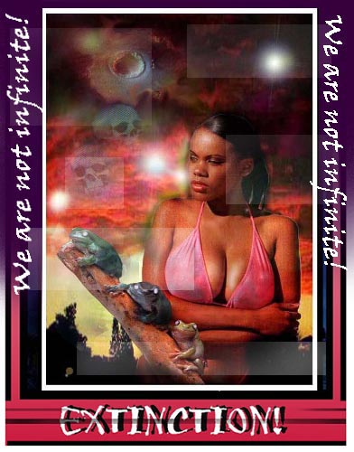
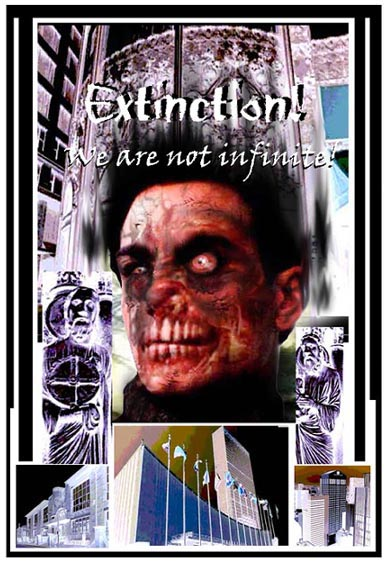
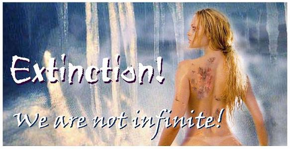

Comic Art
Original Comic Series
After the Flesh 2
A Pandomonious Pandemic
Try it again we have to make sure. This truck is the only thing that stands between us and the afterlife, Ben!
Pedro spoke those words with dread in his heart. His partner, Ben, was checking and re-checking every aspect of their truck. The shock absorbers and the headlights were especially important. Ben and Pedro were the accepted drivers to a specially modified truck aptly called the Devils cradle. Behind him and setting up over three city blocks away, was the Pandoras box. That was the name given to the second truck chosen to be piloted by Scot and Dale. In all, the Johnson & Johnson Pharmaceutical Corporation had picked four expert drivers for a very delicate job.
As Pedro watched the last light of the sun go down, he bent over a nearby curb and attempted to stop himself from heaving. After a quick drink of Pepto-Bismol, he straightened up and got his emotions under control again. The sky was turning a dark shade of purple and Ben could see it wasnt going to take long until the rains arrived. This would make things difficult, thought Pedro. Watching Ben flick on the headlights, Pedro stood several feet away from the truck as Ben called him to take his place in the passengers seat. However, Ben was having difficulty moving forward. This temporary paralysis wasnt due to any physical affliction, but instead, stemmed from his own deep-seeded fear.
Come on, Pedro we got to move, man!
Hearing Bens agitated voice just added to his nervousness and for a brief moment, Pedro seemed to watch time stop as he thought about how they ended up in this situation to begin with; and how the promise of a single job would bring wealth beyond his imagination.
Four months ago, Pedro and Ben were working for the US Marine Corps. Years before that, they had spent time in the Gulf War and drove heavy loads of military equipment through the deadly spirals of Desert Storm. They were friends for years and protected each others lives on more than one occasion. Technically, Ben and Pedro were experts in the transportation of weapons and military goods. Leading large convoys, they were often the designated poster boys of the Iraqi war effort. But after Operation Desert Storm, the two had real trouble adjusting back into civilian life.
Taking on jobs for cross-country trucking companies, the once heralded military specialists were demoted to ordinary deliverymen. What was worse, was that a month ago, they had the unfortunate incident of crashing into a school bus full of children. That night the rain was heavy and the fog was thick. Nevertheless, they had crashed in a bad way and three children died in the process. Despite being decorated military men and having road investigators rule the crash as a fault of the rain and fog, police found an empty container of vodka in the back seat and a level of blood alcohol just high enough in Ben to concede a drunk driving verdict.
Ben and Pedro were in that mess together and expecting to attend a court date in three days; they were sure theyd be locked up for years. Knowing this, there was only one way out: this meant a quick escape. Ben and Pedro needed desperately to leave the US before their court date, but simply didnt have the money to do so. They needed a plan and Pedro quickly concocted one. It was simple in every way, but would work just as simply. They would get a high paying gig and take off to Mexico. There, the two could start their lives all over. After all, the charges they were facing though grim, was not the kind that would send marshals over the border. Put simply, if they could get out of the states, they could live their lives in peace, only never to return to the states again. Considering the circumstances, it was an exile well worth the taking.
But how did he end with this job, thought Pedro. This loathsome job it was the stuff of nightmares, but he could remember the demons that drew him in. Only days ago, he received a call. His old buddy Ben was excited and his voice was filled with a weird enthusiasm.
I did it, Pedro! We are in the money, man. I got this awesome gig; if we pull this off, well be living it up in Acapulco for the rest of our lives!
Huh, que, paso? What the hell are you talking about, man? Replied Pedro in early morning irritation.
I got us a onetime job that will set us up for life. Once we do this gig, well go AWOL on the courts and scaddadle out of here, man!
All right, Im hearing you, hombre Whats up? Whats this gig youre all excited about?
I just got off the horn with Dale and Scot - you know, the guys we were stationed with up in Baghdad. Anyway, they got this sweet gig from Johnson & Johnson Corporation the guys who make those baby aspirin. Anyway, these corporate boneheads are really up crap creek about moving some kind of chemicals, man. Those penthouse bozos must have really screwed up, because they have the government sending in an inspection team to their facility you know, to like bust them. Apparently, they were working on some kind of illegal chemicals and need to get the whole kit and kaboodle out of there, pronto!
Chemicals? Replied Pedro cautiously. What kind of chemicals are you talking about, bro?
I dont know, man and I dont care. She-e-e-sh, brother, we need to get out of here, dont we?
Yeah, youre right, Ben. Unless we want to spend time down in Joliet State Prison for the next sixteen years. All right, count me in, Ben. Im with you all the way on this. So, whats next?
Well, Johnson & Johnson wants to meet us and give us some specific instructions. Hey, you know what the funny thing is? Dale and Scot told them we were pending trial, but they didnt even care. It seems these guys are a lot more desperate than we thought!
Yeah, but I dont understand why youre so excited about this gig. It seemsdangerous. Said Pedro in a worried tone.
Ben could hardly keep talking due to an ever-growing smile that pasted his face.
Look, Pedro, youd better sit down for this; what Im about to tell you might make you faint!
What? Come on with it already spit it out, man!
Well, the Johnson & Johnson Corporation has agreed to pay us $700,000 dollars, each!
What? Thats impossible that cant be right, man! What job on this world could pay that much for a single gig?
Hey, I told you, man these guys really mean business. All we have to do is move two truckloads of this stuff from Dallas Texas to Tijuana Mexico. They cant fly the stuff or move it by boat, because of some kind of federal regulations. I dont know the skinny on the details, all I know is they need some expert driversand need them fast!
Getting back to reality, Pedro shook off his nostalgia and returned to the present time. His thoughts of the circumstances, which got him to this point, did little to comfort him. Carefully jumping into the passenger side seat, Pedro sat in the trucks wide front cockpit. The truck looked like any other heavy transport. It was actually quite small and had the compartment space of a regular sized van. There were sixty-six round barrels consisting of silver metal frames, which supported thick glass barriers, calmly fixed in the back of the truck. Ben remembered why the blue, gelatinous liquid was stored in these rather fragile glass containers instead of metal ones. It had to do with something about a chemical reaction toward rust and metallic elements. Such jargon meant nothing to Ben though, and he quickly started the trucks ignition and sent the vehicle moving from the medical research base and off into the darkened streets of the city beyond.
Back at the Johnson & Johnson facility in Texas, Dale and Scot watched from the lobby as Ben and Pedro pulled out of the long parking lot. Soon, they too would have to set off after them. Dale and Scot had the same goals as Ben and Pedro, but they knew a great deal more about the situation they were in. Having participated in several military intelligence campaigns back in the Gulf War, the two had intimate ties to corporations that needed a quick fix to delicate situations. It was this sordid tie that led them to the Johnson & Johnson Corporation. As for their pals Pedro and Ben, they were simply the best drivers they knew back in the Gulf and were certainly desperate enough to take on the task without asking too many questions.
Dale knew what was in those strange glass barrels. He and Scot had discussed the situation in detail with the executive that was leading this operation. Even as he thought about this, the executive administrator walked out of his office to greet his two henchmen before their risky departure.
Colin Green was the man in charge of the expelling operation. Green was superceding the production of the Phage bacterium. In fact, the word Phage means literally to eat, an apt title for the worlds most dangerous pathogen. The Phage experiments consisted of several labs dedicated to producing a tame and domestic version of the flesh-eating bacteria. Although they have tried to produce a workable subject for years, it was only weeks ago that an acceptable version of this flesh-eating plague was created.
The Johnson & Johnson Corporation did not have the intention to weaponize the flesh-eating bacteria, but only to tame it. They had a billion-dollar contract that would give them the rights to produce this strain of bacteria for the use of sanitation departments around the world. The premise here was to use the flesh-eating bacteria to literally consume all the organic material in the worlds massive stockpiles of garbage and leave the recyclable material behind. This purpose would prove to be an economic giant among many nations ecology-minded budgets and make Johnson & Johnson the wealthiest corporation on the planet.
However, their research scientists had discovered several disturbing properties concerning the new strain. Although the flesh-eating bacterium of normal standards is known to devour an inch of flesh every hour, this new brand consumed more than a foot of flesh in the same time span. This deadly trait was reported, but greedy corporate leaders merely urged the research scientists to keep up the pace. But after three researchers were infected, Colin Green continued to ignore the dangers of the Phage bacterium. To make matters worse, when Green heard rumors of one of the infected researchers plea to the CDC (Center for Disease Control); he made sure that these infected scientists ended up missing and never found again.
Having CDC inspectors arriving in only days, Green needed to get this extremely valuable pathogen off federal territory and into lands where the corporation could easily bribe the regulators. Being in Texas, Mexico was the natural choice. But now it was time to give Dale and Scot a final briefing, after all, these men were delivering possibly the most valuable commodity on the planet.
Dale and Scot observed Green as he slowly paced around the two like a hungry tiger.
OK, this is the drill, boys. You know what this load means to me to us. Its very important that there are no mistakes made here. As you well know, we have to operate at night. This is because the sunlight could warm up the cargo and possibly damage the goods. It will also make things less obvious to local folks around these parts. The trip is a simple one: move the cargo through El Paso, down through the countryside, and pass the Rio Grande. Once youre in Tijuana, our people will take it from there.
Its like taking candy from a baby, man. Dont worry about it Green, well deliver your brainchild in good condition. Replied Scot with a smarmy attitude.
Dont think it will be that easy! Said Green. There are many road checks ahead, and those glass barrels arent the toughest containers in the world, you know?
Yes, sir! Replied Dale in respectful obedience.
Look, Ill just lay it out to you straight we cant afford even one mishap here. If even one of those barrels were to break, it would certainly lead to a state-wide pandemic; you got that!?
For the first time, a look of fear arose in Dales eyes. He had seen some of the lab work done with the Phage strain before and it wasn't pretty. Once, while signing a contract in Greens office, he watched a video tape of the Phage bacteria decimating a large horse. To his surprise, he could actually see the infection eating away at the poor creature. In less than two hours, the animal was so badly consumed that it dropped dead - it had been literally melted apart. Fully realizing that this flesh-eating bacterium might do the same to him if he were complacent, Dale couldnt shed the fear from his face.
Green gave the men a series of permits and finally led them to the doorway.
Well, its timeGod speed. Remember to stay a good mile or so from Ben and Pedro you know, its a safety measurejust in case something happens, at least two trucks wont explode with our - um, precious cargo.
With that said, Dale and Scot hit the road, while turning on the headlights and lighting up a barren stretch of asphalt ahead. As Scot revved up the engine, a silent streak of lightning passed through the sky and a thick downpour of rain began to fall.
Damn, trouble already!" Replied Scot.
After the duo left, an urgent call came from Johnson & Johnson headquarters. Colin Green took the call with some anticipation. Before answering, he already knew who was on the other line.
Boss Mr. Gillian. I just sent them off. Im sure theyll make the drop before the CDC gets here.
Theyd damn well better, said Mr. Gillian. Its not going to be the best of times to do so. Have you seen the weather reports?
Well, um -- I was kind of busy and
You fool! That tropical storm off the Gulf of Mexico sprung into a full class hurricane. The son of a bitch is already a category four. Do you know what that means, Green?
Suddenly, Green was loosing his cool. He and the drivers he hired knew that a hurricane was brewing off the coast of the Gulf, but figured it would never make landfall - at least not until a few days had past.
No disrespect sir, but I thought that Karin wasnt supposed to hit lower Texas and Mexico for another three days. So I figured we had plenty of time to get the cargo to Tijuana. I mean its only going to take one night of driving to get there!
Green, you should have kept up to date on the weather, son. This hurricane that theyre calling Karin, will be passing over the entire lower half of Texas within three hours, you fool! I hope you got the best drivers for this job, because if they fall; then so do you! Is that understood?
Yes, Mr. Gillian I wont fail you.
You'd better not, theres billions of dollars ridding on this do you hear mebillions?!
Theyll get there, boss - Ill make sure of it!
One more thing you did tell them about our little protection policy, right?
Protection policy? Im not sure Im following you, sir.
The explosives, you idiot! Did you tell them about the explosives?
Well, no sir. I figured that was our business. I mean the only reason why the barrels have a crash-charge on them is to ensure that the explosives get rid of all the evidence, right? So why tell the drivers? If they crash and somehow survive, they wont be able to tell anybody about the situation since they wouldnt know why the truck exploded to begin with.
Damn it, Green. You dont know what a crash charge is, do you?
Not really, sir.
Well, let me enlighten you then. The Phage serum is covered by a first layer of explosive gel. It's a double agent, acting as a compound to stabilize the serum and to blow away any evidence if a leak occurs. These charges are set to go off if the truck buckles just over 40 PSI. In English, that means that if theyre not careful and hit a large potholeboom! It will be all over for them and for our billion-dollar contract. Do you got that!?
Dear God; I didnt knowwhat do you want me to do?
You got communication, right?
Yes.
Then call them up and let them know theyre transporting the most explosive load they could ever imagine! Least ways, theyll be extra careful when Karin comes knocking!
At that, the CO hung up and left a dreadful ring in Greens ear. Immediately, Green turned on the TV and put on the weather channel. To his surprise, the storm was already dangerously close. Picking up a radio dispatch phone, he quickly made a call to Scot and Dale.
Hello, Scot?
Yeah, its mewhats going on?
Listen to me carefully I need you to transmit this message to Ben and Pedro as soon as Im done telling you, all right?
Sure, said Scot as Dale listened beside him.
The cargo youre carrying Its a lot more than chemicals. I couldnt tell you earlier, because I was afraid that you people would snuff the job. But now that youre already on the road, I have to let you know how important it is to listen to my instructions!
Dale and Scot just looked at each other as if they were about to get suckered.
OK, were listening
The barrels you are carrying are highly contagious no, not contagious downright deadly! Its imperative that they be kept safe. If even one of them were to break open, an epidemic of the Phage bacterium could start and would devastate millions! Do you understand?
Holy crud! I thought you said, this stuff was only as dangerous as carrying acid, thats all!
Well, thats not all of it There are motion detecting explosives in every barrel too. If you boys crash or hit a speed bump too hard, youll blow yourselves to freaking China! I didnt know about the full power of the detonators, but my boss just explained it to me. You see, if you get caught, there can be no evidence left behindnothing!
After a long silent moment, Dale grabbed the speaker and made a heartfelt reply.
You you practically sent us to our deaths! There is a flaming hurricane coming our way, and were carrying a super-explosive, super-contagious disease! What were you thinking, man?
We had to keep a tight lip on this one Come on, you guys used to work for military intelligence, thats why we picked you people for the job. We thought that youd be able to handle the situation once you got the whole story can you?
Reflecting on Greens question, Dale and Scot knew they had little choice. After hearing about the missing researchers, they knew all too well that the Johnson & Johnson Corporation had the power to make anyone disappear. Besides, all they had to do was get the cargo to Tijuana and they would be filthy rich.
OK -- we can handle it all right. Just let us know if they are anymore surprises, Green!
That was it, soldiers. There are no more unsavory discoveries. You just do right by us and well make certain you people will be the richest men on the block to whatever town you guys settle down in.
Is that a promise, sir?
You have my word and of course a legal contract riding on it. Green Out.
The communication was over and now registering the knowledge, Scot slowed down the truck considerably.
Hey, why slow down, man? We need to get to Mexico before sunrise. Replied Dale
At what risk? We're going to pass right through El Passo. There are still some cars on the road despite all this rain. I nearly went over a pothole a while back. We could have been blown to bits already!
Just relax and speed up. Remember, man; the slower we go, the more rambling the truck will do, and that will make the cargouneasy.
Dales warning was well received and Scot sped up the truck to a full 60 miles per hour. The wind was already having a slight pushing effect on the truck's left side, so Scot had to manage the wheel wisely. He was beginning to loose control of his nerves and wanted desperately to light up a cigarette. But in this situation, such a rash act could cause them their death. Hed just have to deal with his quaking nerves until the mission was over.
Dale bent over and turned on the trucks radio. The news of Karins rampage was getting worse.
Hello, this is Betty Brent reporting live from El Passo. The storm is growing worse and Karin has her grip on the lower regions of the city. Already the winds have been clocked at an astonishing 150-miles per hour. Experts claim that her status will jump from a category 4 storm, to a whopping category 5. In retrospect, there hasnt been a category 5 hurricane to hit landfall since, 1926.
Shut it off! Replied Scot angrily. I I just cant handle that news!
Whats a matter with you, Scot? We got through worse than this back in the Gulf, man. Well be done with this soon.
As the two talked, the winds blew all manner of floating debris against them. Twice, large branches banked the side of the truck and Scot and Dale held their breath in mortal terror, fearing the explosive charges might detonate. The streets were empty by now and the only ones daring enough to ride through huge sheets of falling rain and super-powered winds was them or at least that's what they thought. For in front of them, parked off road and stationed just below a viaduct was the Devils cradle.
Look, Dale Its Ben and Pedro. They stopped; parked below the viaduct. I wonder whats wrong.
Never mind whats wrong! We were ordered to stay at least four blocks away from them, and now we know why!
But Dale, Green told us to tell them about the charges I think they should know, they're soldiers like us, man.
Oh, yeah? Then what if they bale on us right then and there, huh? How would that look to Green?
Damn it, Dale -- I dont care about Green, just the money. If we loose one cargo, hell still have the other. Thats why they sent two trucks, just in case one failed to make it back.
All right then. But you break the news to them, I cant stomach anymore deceit!
Pulling the truck over to the curb, Dale and Scot got out of Pandoras box and headed for the Devils Cradle. Pushing through ridiculously strong winds, and getting their faces pelted by small debris, they finally made it under the temporary safety of the bridge. Once there, they saw Pedro siting on a low curb and vomiting over to his side.
Hey, Ben whats up with Pedro? Is everything all right here? I mean none of those barrels your carrying broke seal, right? Asked Dale in concern.
No everythings fine. Pedro is just a bit under the weather.
Looking around the highway and seeing swarms of flying wood and the pouring rain, Ben added an antidote to his earlier sentence.
Arent we all!
Ha, ha, yeah, man. It seems so. Look, I have something important to tell you. I just found out about this from Green a while ago while still on the road. This is big news, so don't freak out on me, all right?
What now? Said Ben in a sarcastic tone.
The cargo we're carrying its charged with explosives. Apparently, Johnson & Johnson wants to make sure that any evidence goes up in smoke if we dont succeed in our mission.
What? . You got to be screwing me! ...Weve been driving a truck full of explosives all this time?"
It gets worse, said Scot. The explosives have motion detectors, any rollover, or serious bump will send us straight into orbit!
You got to be joking, man!
Dale and Scot gave Ben and Pedro a silent look of sincerity. It was then that Pedro rose and rebuked the entire mission.
This is bull-crap! We cant go on like this. Were in the middle of a growing hurricane, damn it! Jesus Christ! I quit right now! ...Ill have no more to do with this deathtrap!
Ben reflected on this, too, but soon realized the choices they had were slim.
And go where, Pedro? The city is under the grip of Karin. We cant go back, or well be put in jail as soon as this storm ends! Look, I know youre upset about this; I think we all are, but we have to finish this. Were only hours away from Tijuana; if we get there in one piece, well be set for life, man!
After hearing his friends logic, Pedro took in a deep breath and finally accepted their fate.
All right, Ill do it, but let me get myself together first!
Hey, man, you guys should have been blocks ahead of us. You better get back on that truck and start out as fast as you could, soldier!
Hey, whats the difference? Asked Dale. It doesnt matter who is in front anyway. You two take a break; Scot and me are moving ahead. Im sure well be the first to reach Tijuana and let me tell you, kidthats not a bad place to celebrate!
Afterward, Ben and Pedro watched Pandora box drive off into the foggy rain. In the darkness above, surging crackles of lightening lit up the sky in patterns that matched a skeletons fingered hand. Soon the truck was out of sight and Pedro took up the drivers seat. They revved up the Devils cradle and followed suite.
Do you believe this crap? Asked Ben.
Well have to watch our driving a lot. We have to make sure to avoid any large potholes and not to go too fast. God forbid we hit one of those hidden potholes by the water.
Pedros nerves were shaking, but now, he also noticed that Bens hands were trembling as well. It was the burden of fully realizing that they were on a march of death. Ben pulled out a small bag of tobacco and began to roll a cigarette within the protected cockpit of the truck. Quickly, Pedro turned to stop him.
What the hell are you doing? There are explosives back there. Do you want to kill us? Shouted Pedro.
Ben just remained silent for a moment looking dumbfounded. Then spat out an illogical reply.
Well, Dale and Scot seem to be doing all right
But before he could finish his sentence, a heated wave of air struck the front of the truck and melted its way into the windshield. Ben watched the tobacco blow from his hands in slow motion, fearing that he too would be blown away in similar disregard. But as Pedro stopped the truck, they took relief in knowing that they were still intact. Ahead of them, a miniature mushroom cloud filled the lightening-ridden sky. The orange hue of the immense fire looked surreal against the raining blackness of the night.
Holy mother of Mary That was Pandoras box! Damn, Pedro it blew up -- by God, it blew up!
"I know, that means we have to move much faster! Replied Pedro.
I dont get it, that heat wave blew out the front windshield, why arent we dead?
Pedro merely pointed to the dashboard. On the leather casing, an embedded sign read: reinforced titanium.
"The front of this truck is reinforced, besides, the heat wave melted the windshield through, but it didnt even buckle the truck.
At that, Ben noted the burns on his and Pedros face. They were minor, but still noticeable. Pulling the truck near to the blast zone, Pedro discovered an awful site. The highway pass had been blown to bits. It was an elevated part of the road and the explosion had left a long crevice between them and the other side.
Damn it! Cried Ben. We cant get across and the drop is too high to risk. Well have to go through the side streets!
As Ben cursed up at the dark and violent sky, he saw Pedro staring at something with his mouth agape. The air was still throwing about dangerous pieces of debris and the winds were getting worse. Nevertheless, it wasnt any effect from the passing hurricane that had Pedro in a trance.
Following his friend's peering gaze, Ben saw what Pedro was peeping at with disdainful eyes. There, crawling pitifully along the roadside was a large dog. At first, Ben thought it was hurt from the hurricane debris or even the explosion, but on getting a better look at the mangled beast, true terror crept in his heart.
Holy hand-grenades, man! That doghes got the Phage!
It was true, the explosion of Pandoras box may have been powerful enough to leave no evidence of the truck, or Dale, and Scot, but its actions had blown the Phage bacterium all across the surrounding county. In tandem, every living thing that the millions of tiny, blue droplets touched would be infected with the worlds most contagious pathogen.
Lets get out of here, now! Said Pedro. This place creeps!
Running back into the truck, the two glanced over every part of their bodies. They were looking for the telltale blue drops that signified the Phage bacterium. Even so, the rain was pouring outside and both were reasonably drenched by the downfall. After securing the rising feeling of panic, Pedro realized that they were not infected. If they had been, they would have started to itch and show the black fringes of infectious rot on their flesh. Since the Phage bacterium was so well mutated, it infected flesh at an alarming rate.
Relax, Ben, Im sure were not infected. That flesh-eating stuff works on contact, if we were infected, we would have known by now!
Ben let a big sigh of relief escape from his lungs, then asked a pivotal question.
What now?
Im not sure, said Pedro. The hurricane is obviously dying down. It looks like the winds are starting to slow down. I think we should keep going we have to make it to Mexico. Dale and Scot may have bit the dust, but I think we could make it there if were careful. Besides, were too far into this mess and staying here will be a real risk.
Ben nodded in agreement. Then they began to ride pass the half-flooded and deserted roads, finally ending up near the border of Mexico. Another three hours had passed and Ben and Pedro were on the brink of a nervous breakdown by the time they reached the first two checkpoints of the Mexican border. They had clumsily drove over several large potholes and got hit by a series of large debris that still swung in the air from the last gusts of Karins tropical winds.
Now, slowing down the truck, they found themselves among hundreds of cars. It was a strange feeling, since they had come from an urban area that was very desolate only hours ago. Ben turned to Pedro and began rehearsing their act for the border patrol.
Hey, Ben; I dont get it. Why are so many people trying to get past the border?
I dont know, said Ben. I figured theyd be locked up in their homes. I mean look at this place!
Ben pointed outside, where the hurricane had left miles upon miles of ruined houses and debris. What the two didnt know, was that they were just as responsible for this great panic.
Maybe they were trying to get away from Karin - sometimes people evacuate when a hurricane of that magnitude passes. Now that the storm is gone, theyre probably stuck here. Replied Ben.
I dont know, that doesnt make much sense to me. Put on the radio, maybe there is some news that could explain this situation.
Ben turned on the radio and found that nearly every station was repeating news about the same dreaded issue. Upon tuning into several channels, Ben found a perilous tone of panic and pandemonium in the broadcasters voice. One broadcast in particular gave a sudden and fearful shock to them both.
Its complete lunacy here! Replied the radio voice. It seems that nearly the entire population of southern Texas has been infected with a mysterious plague. What monstrosity did Karin bring? What manner of death has this supernatural storm brought us? Hospitals all over are filled with victims being eatin alive by some unknown disease. Medical experts say the plague is a form of flesh-eating bacteria, but none have ever seen such a pathogen move at the alarming speed of this insidious pandemic!
Holy crap! The Phage is everywhere, Dale and Scot must have released the whole damned cargo! Replied Ben.
Damn, here comes the inspectors the border guards are here, get yourself together! Said Pedro harshly.
As the three border guards reached the truck, they noticed a huge tear in the back of the truck. Ominously exposed, was a load of glass barrels containing a mysterious blue gel. Apparently, the truck had taken on more damage than Pedro and Ben had thought and miraculously had just barely managed to avoid enough pressure to set of the explosives. But now that the cargo was clearly seen, the lead guard walked over to the drivers side and ordered Ben and Pedro to step out of the truck.
Driver's license and insurance please?
Ben obeyed the guard and gave him the necessary identification.
Whats the blue stuff you guys are carrying? Asked the lead guard.
Its just pharmaceuticals from the Johnson & Johnson Corporation. Theyre very sensitive to light and we need to get them to port before the sun rises.
Hmm, well, you better hurry then, because you have a huge gap ripped open on your backside of the vehicle; were you aware of that?
Suddenly, Bens heart began to race. They were completely unaware of the damage and feared that the Phage might have escape from their truck as well.
No, we - uh - we were just trying get past Karin back in El Paso. Replied Ben cautiously.
There is a very serious medical emergency going on up in the states. Somekind of super contagious disease, I hear. Were making sure that no one gets past the border until the CDC gives the OK. Anyway, were going to have to confiscate your cargo this is the normal procedure for an emergency like this. The hurricane that passed may have brought some really infectious stuff around these parts and there are reports of people being infected.
Pedro listened quietly to the lead guards reply. In addition, the second border guard began to enlighten them further.
The last four farmers had infected cattle, 22 people were also pulled off the road and quarantined. They wereI dont how to explain it they looked like monsters. This disease is something terrible! Replied the guard with a look of disgust on his face.
As Ben and Pedro conversed with the lead border guard, the other two began unloading the truck of its precious cargo. Seeing this, Pedro shouted at them in a panicked anger.
Hey, what the hell are you doing? That stuff is very expensive, you cant just confiscate it it belongs to a private corporation!
Hey, just relax, amigo youll get it back after the specialists check it out. We had a guy with an entire load of frozen meat loose his whole cargo, because of that skin-eating stuff. Believe me, you want to have it checked out. At any rate, you two will have to go with us to the Red Cross station. Its right on the corner, they just need to give you a quick inspection you know, to see if you guys have any blackness on you. Replied the lead guard.
Blackness? What are you talking about? Said Pedro.
The blackness its a symptom of the disease. Those infected get really dark blotches of rash that starts to eat into their skin. Its mas rapido - real fast, and can kill you if you dont cut off the infected parts quickly.
At this point, their plan seemed permanently derailed. What were they to do? No, thought Ben. It was apparent that the first truck that exploded had released the Phage plague and the harsh winds of hurricane Karin made sure it spread wide and far. If the CDC or the Red Cross found out they were transporting the Phage, they would surly be brought to justice. They needed to do something and something fast. However, as Ben and Pedro walked off to a solitary corner and debated, a wild panic swept over them after hearing the unmistakable crash of broken glass.
Looking toward the truck, they could see feet clambering in a weird pattern from behind the big vehicle. Under the truck, a thick oozing of azure goo slowly meandered like a small river. After a series of maniacal shouts, the two guards that were unloading the Phage cargo ran past the truck holding their faces in terror. The lead guard watched as the men revealed their faces and the sickened black rot that was eating into their face like demonic acid.
Dios de la madre! Its the American disease! Shouted the lead guard.
Abandoning all responsibility, the guard ran to a patrol truck and sped off so fast that smoking tire marks were the only things left of his departure. Likewise, the entire crowd of people began to back up and take off in complete pandemonium. One car was loosing control as they tried to avoid several people now clearly infected with the Phage. It was moving in crisscross patterns and heading straight for the Johnson & Johnson truck; the same vehicle filled with the explosive Phage bacterium.
Good God! Cried Ben. Run run as fast as you can!
At that, Ben and Pedro ran until they reached a car with its driver still in the process of entering. Quickly, Ben grabbed the man from behind and Pedro grabbed the keys from him. Jumping into the drivers seat, Pedro revved up the car as Ben jumped into the front after forcing the original driver into the back seat.
Drive, damn it, drive! shouted Ben.
Pedro stepped on the gas and from the rearview mirror watched a huge explosion appear behind him. The force of the firestorm was so strong that is rocked the car, actually picking up the vehicle several feet in the air before the superheated wind drop it to the floor. The old Monte Carlo kept on its path despite the scorched back bumper and the broken rear windshield.
Everyone in the car had pain still ringing in their ears from the explosion, which left its signature little, mushroom cloud high in the sky above it. Rushing through the open road and heading back toward Texas, Ben and Pedro were now passing back through dangerous territory infected territory. But the infection they both worried about intensely was far closer than they imagined.
Taking a look into the back seat, they saw the man that owned the car wriggling in agony behind them. In a flash the man screamed at Ben and tried to grab him close to him. Ben insistently jumped back as far as the car seat would allow.
Help me, damn it! Help me!
Pedro stepped on the brakes immediately -- the Phage blasted the guy in the back seat. Blue droplets still teemed in the cars rear section and the red and black rot was eating at his face and arms like a rabid blob.
Damn! We got to move! We got to ditch the car, man. This thing creeps, too! Cried Pedro.
The two abandoned the car and began running offside the road. The owner of the car, scrambled behind them still asking for help, before turning back and commandeering his car again.
Where do you think hes going? asked Ben.
Where would you go, if some flesh-eating disease was devouring your face an inch every forty seconds? The hospital!
Wait, check yourself!
Once again the two of them nervously checked their cloths and flesh for any sign of infection and once again, they seemed to have avoided death.
This time, Pedro asked that all too familiar question.
What now?
I dont know I dont know, man! I guess we find a place where we could be safe from those people, those infected people.
Youre right we have got to get a hold of ourlseves. If what Scott said was true, this stuff will get a lot worse when the sun rises.
Pedros warning was right. The Phage bacterium was an accelerant-species and as soon as they sun heated up the vast colonies of bacteria, the flesh-eating plague would mutate into an airborne strain. The massive damage being done before the dawn was terrible enough, but daylight would bring the apocalypse.
Ben and Pedro wandered through an old office building near the side of the long southern road. The glass walls of the place were smeared with blood. It was apparent that a struggle had occurred there. Even so, they walked into the building with the hopes of getting out of the rain.
The damage from hurricane Karin was obvious, but the storm was long gone. Only the constant drizzling rain remained. As the two walked upstairs, they noticed a man in an expensive business suite rocking back and forth in the darkness. His silhouette produced an ominous visage in the wan light of the full moon above. Ben saw the flickering lights from a large TV screen in front of the man. This made him a bit more comfortable, as he realized that the large glass building they were in was one of the few to still have power. Karin had done more than her share of ruining electric lines and this large office building stood well against the wind, despite having many of its wide windows smashed out.
Turning to address Ben and Pedro with a clear sense of paranoia, the man spat out a bleak warning.
Get away from me! Dont make me shoot you!
Suddenly, Ben could make out the shape of a large handgun in the mans shaking fist.
Hey, take it easy, buddy! Were just looking for shelter from the storm. Replied Ben wisely.
The storm? Said the man incoherently. Oh, yesKarin the storm. I I almost forgot about that. But stay where you are; I want to make sure youre not like the others!
What others? Asked Pedro.
The ones with thatstuff all over them; the ones turning into monsters! Jesus Christ, man havent you been watching the news, pal?
Ben saw that the man was un-infected, but emotionally unstable the Phage plague was already reaching far beyond his imagination and he wanted to find a vehicle that they could drive to safety with. But first, they had to contend with this broken man.
Were not infected. Were all right. Said Ben calmly.
Yeah? Well, how do I know that? Asked the nervous businessman.
Look, said Pedro irritably. If we were infected youd have seen us screaming in pain Im telling you, were all right, man!
The man then slowly lowered his weapon and collapsed back into his desk chair.
Im sorry I just dont know whats going on. Its like the end of the world has come. Replied the man somberly.
Everything is going to be all right; we just need to find a way out of this region. That way, we can drive to some place safe. Said Pedro reasonably.
Youre right where are my manners? Im Greg, I was the head of the department here -- once.
What is this place? asked Ben.
Its Fuji electronics. We market electronics here mostly imports from Japan. Anyway, Im the last one alive from my firm. Just hours ago, after the storm was dying down a bit, Carol and Henry came in out of the rain. They weresick. The late staff was here, too, but they fell to the same sickness. It was horrible. They tried to get help, but people did nothing but run from them. Even the ambulance passed them by. They were scared they were so scared of them!
What happened to them? Are you the only one here? said Ben
Yes, the others, they I dont know - they just melted away. Whats left of them is still on the rear lobby floor. Im telling you, pal; they melted away melted away!
What do you know about this sickness? Asked Ben
Just what Ive seen firsthand, but the TV here is still blabbing about it. Why dont you see for yourself?
Ben and Pedro walked to a long, thin sofa and plopped down to watch the hectic newscast that was already in progress.
Karin has brought something that no experts have yet to identify, said the Reporter. This sickness is spreading like wildfire. Over the last six hours, reports of this flesh-eating monstrosity have been issued over the entire state of Texas. According to the Red Cross and Salvation Army, this sickness is also reeking havoc in Mexico and Louisiana. The only thing they know for sure is that somehow this plague was brought by the hurricane.
As the blonde Anchorman rambled on, Ben and Pedro watched in keen interest.
The relief teams including the Red Cross, the Salvation Army, and the National Guard, are setting up medical encampments with sloppy results, since this epidemic has occurred so quickly. Experts argue over the spread of the disease, but all agree that the plague spread so incredibly fast, that there was little time for preparation of any kind. The CDC has issued a series of emergency broadcast initiatives that we will air as soon as I break this report. Addresses to medical shelters and quarantine camps will soon be provided. However, it is of the utmost importance that people stay away from any infected person, even if they include your immediate family. This plague will infect anyone that it touches - anyone!
You see? Thats the kind of crap Im talking about! Said Greg angrily.
How are we supposed to beat this thing, when they dont even know what it is?
Ben and Pedro just swapped guilty looks with one another. They knew what it was, although they didnt have a clue to its full destructive force until it was too late. Nevertheless, they needed to stick with their plan if they hoped to survive.
All right, man. We need to get out of here. You said that the people that worked here were infected, right? Asked Ben
Yeah, they all died except for me of course, but I stood away from them -- just like the TV said so. Replied Greg heavily.
That means that the chance of getting infected is damn high if we stay here. Believe me, man; you dont want to stay in a place where that plague just melted away your friends, right? Asked Pedro.
Greg quickly shook his head as if realizing this fault.
Yeah, thats right - we better get moving then. We cant stay here not any longer!
We need a ride, is there any car that you have the keys to?
Yeah, my car was wrecked on the road, when the first wave of refugees began passing here, but I still have the keys to the company car. Replied Greg.
Good, then lets get moving, the faster were out of Texas, the better well be! Replied Ben.
After securing a simple plan, they went down to the parking lot and boarded Gregs car. Greg took the wheel and sped away into the suburban roads ahead. Soon they found themselves in the desolate countryside. It was still dark and Greg had drove the car into a damp, forested area. It was a nature preserve of some type and the roads were nearly empty. Ben and Pedro had advised Greg to stay clear of any highways. They knew that such places would be teeming with people trying to flee the Phage plague.
As Greg drove, he suddenly slammed on the brakes. In front of him was a tiny blonde girl. She was walking the road among the thick fog, still carrying a plastic doll in her hand. Just feet away from the little girl, the maimed body of a man and woman could just barely be seen in the darkness. Their eyes were pale white and rolled up in a death grip. It was clear that the dead people were the girls parents. Ben and Pedro saw the now orphaned girl as well.
What should I do? Asked Greg.
For a long moment, they just watched the little girl stammer about in the middle of the road.
Take a look at her, if shes not infected, we should pick her up. Said Ben.
No, we cant afford to risk infection! Shouted Pedro.
As the two quarreled, the little girl suddenly ran to the car window. As she drew closer, Greg saw that her eyes were blood red.
Holy crap! Shes infected lets go!
However, as he was about to step on the pedal, the small girl latched on to the side of the open car window.
Help me! cried the girl. Dont leave me here!
Greg squirmed back as the girl stretched her arm toward him. Now being so close, they could see that the Phage had gotten to her as well.
No get back, girl! Dont touch me! Shouted Greg.
Just go! Yelled Ben.
But before Greg stepped on the gas, a lone figure arose from the bushes and clubbed the girl on her head. Stepping back from the unconscious girl, a longhaired, African American woman peered down at the little girl. Swinging a large branch in her hand and wearing a red bikini top, the woman then pulled out a gun and shot the girl square in her head. Turning toward the car and seeing three men looking at her in apparent shock, the woman felt a need to explain things.
I had to do it! She was sick she had that that crap in her. Believe me, it was better that I shot her then let her suffer from the plague. I seen what that stuff could do and it aint pretty!
Who who are you? Asked Greg.
Im Tanya, Im a police officer. My patrol car was pushed over by a mob of infected people a few miles back. Those sick people theyve gone crazy, theyre rioting now. Its like theyve gone completely mad. They know they know there is no help for them now, so theyre doing crazy things: rioting, looting, and even murdering. I dont know its its like theyre trying to live the last hours of their lives in violent protest. I ran from them and now I need a way out of here. Im not infected, but I need a way out of this place!
Looking at the woman curiously, Ben asked a humorously, weird question.
Why the bikini top, you going to the beach or something?
No, you idiot! The top part of my uniform was touched by thosethings. I took it off I didnt want to risk getting infected.
Get in, said Ben. We need to keep driving. If you could help us, then we could help you.
Tanya joined the men and the band of refugees drove the car into the foggy darkness beyond. The rain and fog combined to create a thick haze around the full moon. Stopping for a bathroom break, Tanya and Ben wandered off into the nearby woods. When they finished, Ben turned to see Tanya gazing at some tiny shadows among the tree branches. Shining a flashlight on her, he saw three tree frogs nested on a branch in front of Tanya. The eyes of the tiny beasts were blanked white; it was the first symptom of internal infection from the Phage. Ben and Pedro had seen this in humans many times as they passed by crowded roads of infected evacuees.
Sweet mother of God, whispered Ben. This plague even affects frogs!
Tanya observed in disbelief.
I think this disease affects anything alive, Ben! We better get as far as we could. Maybejust maybe, well be able to beat the spread of this plague and get up north first. Said Tanya with spirited determination.
The group began to drive north as quickly as the road debris would let them. Soon, they were out of Texas and into the state of Oklahoma. They had driven all night and were near Tulsa. Tanya noticed that they had driven past a long stretch of sandy prairie. The land off the suburban area was a sand dunes reserve that banked toward a nearby river.
As Tanya and Greg walked out of the car, trying to gauge the distance from the suburbs to the city, Greg spotted a lone tree. The tree was gnarled in a strange fashion and the morning sun had cast against one side of it. In the shadow caste by the tree, Tanya could almost see the faces of demons no, people - caught in its darkness, as if the shadow had swooped up some suffering victims. Greg watched Tanya with curious eyes, then waved a hand over her face.

Hey, Tanya earth calling Tanya -- are you all right? You seemed to be dozing off, staring at that ugly tree like it meant something to you.
Suddenly, Tanya shook herself out of a daze; she was having a waking dream.
Sorry I spaced out like that. I hadnt slept all night. I thought I saw something in that trees shadow. Replied Tanya.
Theres nothing there, officer. You probably saw a sleepers mirage. Come on, lets get back to the car.
As Greg and Tanya got back into the car, Pedro took notice of an eerie silence.
Hey, man - somethings not right here I mean, something seemsdifferent.
Youre right, Pedro, Replied Ben. Its quiet dead quiet!
Wait a minute look over there, replied Tanya. You see all those things by the playground swings?
Im going to take a look, said Ben.
As Ben walked over the sandy dunes and into a small playground, he began to notice that the floor all around the area was littered with dead birds. As he drew closer, a large crow fell from the sky and landed near his feet. The bird twisted a few times and then fell still. Ben could see that the feathers were merged and covered with bluish ooze. Taking a more accurate peek, he saw that one of the birds feet was totally dissolved. In a panic, he rushed back to the car.
Damn it! The Phage is here, too! Crap, that stuff is airborne. I think the rising sun somehow made the plague spread even further.
Looking at Pedro, he pressed for answers.
Dont you remember what Green told us? He said that the heat from the sun would cause that stuff to go airborne Thats just great, man were all screwed!
Hey, calm down! Shouted Tanya.
Calm down? Have you seen the TV reports, woman? This whole place creeps! Where are we going to go? There are reports that Chicago, New York and even Los Angeles are experiencing the same flesh-eating plague. Weve been driving for hours, havent you listened to the car radio? Shouted Ben.
Listen, arguing wont help, said Greg. Lets just keep moving north. Maybe things are better upstate.
That said, they drove and drove some more. Soon, they passed Missouri, where they seen massive piles of bodies being burnt by the National Guard and Army Reserve. Roads were being blocked off and they had a tricky time finding a gas station where they could pump the fuel by themselves; for most people were already evacuated.
The morning hours had passed and evening was once again upon them. Theyd drove into southern Illinois and made a stop in Springfield. There, they watched a big screen TV in a department store window as the Phage horror played out via masses of angered mobs. While paying attention to the news reports, a man with his face completely covered with the Phage came up to them ranting in anger. His eyes were red and his pupils were dilated in a way that Ben thought impossible.

You you people, youre not infected! How did you avoid the rains, man? That damn blue rain!
Look, Im a police officer. Said Tanya as she stood out of her group, flashing her badge. Just go back and try to get help from a hospital the-
Suddenly she was cut off.
Hospital? Cried the infected man. Are you insane? Thats where I got this crap from! You people must be behind this, all of you un-infected people. Why would God choose you to be spared? Why, damn it?
Ha, there is no God, said Ben. Just bad faith, buddy.
After that maniacal verse, the man quickly rushed to attack Tanya, but quick as a cat, Tanya whipped out her gun and blasted the man mid center. His chest exploded and he fell to the floor, wriggling in pain. Before giving up the ghost, the man looked up at Tanya with merciful eyes and made a terrifying quote.
Thank God its over for mebut I pity you I pity you all!
Now dead, the man finally lay still on the wet street.
This place is deserted and this guy is probably just one of the few people that stood behind. Lets get to Chicago. Thats the nearest big city and if they dont have things under control, I dont know who will! Replied Greg.
They all agreed and began their trip north. As they drove, the whole lot of them watched in bewildered astonishment, as thousands upon thousands of dead animals was seen on or near the roads.
Jesus! This thing is everywhere! Replied Ben. How could it move so fast?
Its by touching, or breathing in those damn Phage clouds. We have been among the lucky. So far, weve managed to avoid any of the plague mist and contaminated rain. Others obviously got it from close contact. I seen thousands of people cram into hospitals for help little did they know, that all you had to do was touch an infected person and your life would be over.
Christ, what a mess! Said Pedro. Hey, put the radio back on I want to know if they learned anything new.
As the radio blared out in the car, warnings of mass hysteria and destruction on an unprecedented level were dished out by an assortment of anchormen.
This is WGCI and were getting information that this plague is infecting everything alive! Experts warn people to abandon all pets no matter what animals they are. There are also strict warnings to avoid any contact with family members infected with the disease. Put simply folks if you see anyone and I do mean anyone infected, run away from that person immediately. You can not help them I repeat, there is no cure for this devastating ailment!
Ben and his group finally made it to Chicago; they were soon driving down lower Wacker drive and quickly noticed that this part of the city was as barren as all the others. Millions of bodies littered the streets and storefronts had evidence that thousands had looted them.
Holy mother of God! Said Greg. I cant believe this this is Armageddon, man!
Look, we better get somewhere safe. The car engine is heated up too much. Well need a place to stay and somewhere you think that damn Phage virus or whatever it is wont find us!
You talk about it like it had a brain, as if its out to get us. Said Pedro.
Well, in a way it is, you fool -- We have to find a safe place! Replied Tanya heatedly.
Look, over there, said Ben pointing to a popular grocery store. I think we could take some haven in there. There should be canned foods in there and we could probably be safe if we spend most of the time in the freezer. Since this place seems especially saturated with the Phage stuff, I figure bacteria cant move so well in the cold. And this place really creeps you know what I mean?
Thats a good idea, said Greg. Well spend just enough time in the freezer to make things difficult you know, hard for any bacteria to grow, you get it?
Tanya didnt really understand what they meant, but she figured they knew what they were talking about.
Sounds good to me. Lets get in there before some of the National Guard comes around again. The last thing we want is to be rounded up and put together in some damn quarantine spot where wed get infected for sure. Said Tanya.
Prior to parking under a bridge, the four of them watched as several National Guard trucks passed by. They were tipping over buses and trucks that were filled with the decomposing bodies of dead people. In tandem, another truck would follow and burn the entire set of vehicles. This was no doubt a measure to burn any contagious pathogens. Ben and Pedro had seen the militia even flip trucks off of highway bridges, only to fall to the ground, exploding on impact. Although this move was distressing, because they had parked near a bridge way, the group found that parking under a bridge was the only way they could avoid being spotted by the military.
After a few moments, they were in the store and Ben quickly found the food locker. Opening the refrigerator door, he stumbled back in terrifying shock.
Whats wrong with you? Said Tanya.
But peering into the huge freezer, she saw what troubled him.
In the midst of long hanging icicles, stood a beautiful woman, naked from head to toe. Apparently, she had heard the news reports, which ordered people to take off all their cloths, if they thought they might have been in contact with the plague. She turned around with pale eyes faintly glowing. Her back was clearly being eating alive by the Phage bacterium. Inside, the freezer looked as if it was on high, since it now appeared like the inside of some frozen cave, with thick sheets of ice covering the walls, hiding any semblance of a manmade design.

Are you all right? Asked Tanya, empathetically.
However, the woman merely walked slowly over, then fell to the floor in certain death.
Lets get out of here! said Tanya. We have to keep moving!
As fast as they entered the store, the four of them left even faster. They peered around the corner and watched an armored car full of men in white gas masks and virus suites peel off from their right.
Now, lets go, before they come back! shouted Tanya.
The four of them ran toward the car and began rushing into the vehicle when they noticed a queer squeaking sound. Tanya and Ben turned up to see a large bus tipping over on a highway bridge just above them. They had parked under a highway to make themselves less noticeable, but now, this advantage was working against them. The bus tipped over and fell in slow motion as the four of them gasped in cartoonish horror. A second more passed by and the huge bus was on them.
After a minute and a half passed by, Tanya and Ben shook off their unconsciousness. Turning to her right, Tanya could see that they were pinned under the bus. Greg and Pedro were dead instantly killed from the impact. Tanya heard a gurgling warning coming from Ben. She turned to see Ben trying to pick up his arm, faintly pointing at the crushed side of the bus that was now upon them. Tanya squeaked in horror as she saw a melted arm from one of the dead bus passengers rolling toward her. The dismembered arm rolled right on top of her face and Tanya shirked it off with her one free arm. The thick, blue ooze from the severed limb was now dripping down her neck. In that instance, she knew it was over.
No, no, no, no! Cried Tanya in an angry fit. I wont let you win like this! I wont let myself be eaten alive!
Ben watched in pity as he tried to pull himself from the impassable heavy bus, but after his last hard effort, he suddenly slumped over to his side and coughed out a river of dark, red blood.
"God, help save us," he muttered before succumbing to the Grim reapers grip.
Well, at least he died like that, said Tanya in dark humor.
She thought about her own demise about being eaten alive, while she was stuck under a ruined bus. Peering above her, she saw a large flock of charcoal, black ravens beginning to fall from the sky. The feathered rain of these little beasts put the final touch of the arcane within her desolate heart. Fearing a slow and painful death, Tanya began to yell out to God, mostly in anger.
Damn it! Why, why did you do this to meto us? Were we so bad? Did we turn into Sodom and Gomorrah?
Laughing in partial hysteria, Tanya joked at herself as she realized she was yelling at God if there really was a God. She could feel that the majority of her body, which was tightly pinned beneath the car and mangled bus, was awash with fatal injures. However, none of them would kill her before the flesh-eating bacteria began its nasty work. In fact, it was already beginning to dissolve her neck.
Dont let me die like this! Shouted Tanya toward the red hued sky. I dont deserve this! Answer me Gosh damn it! At least show me you exist!
After a few silent moments, Tanya had slopped her head down to the asphalt and looking at the dead body of Ben, she made a rhetorical reply.
You see, Ben there is no God.
But as soon as she uttered those words, a biter smell filled her nose. Prying her head up to glance over the mangled mess of her body, she saw a long stream of gasoline streaking down the lower half of the distorted bus. Noticing that a small fire was still burning in the buss front side, she instantly realized what was about to occur.
Well, raise my rent -- I guess there is a God after all!
Only seconds before the gasoline stream hit the burning dashboard of the bus, Tanya looked upon the ominous sky one last time, realizing that her death was only one out of many and almost certainly out of billions to come. Finally, she let out an ironic laugh and stated her last words.
Ha, ha ha, sothis is extinction!
The End
^ Top ^